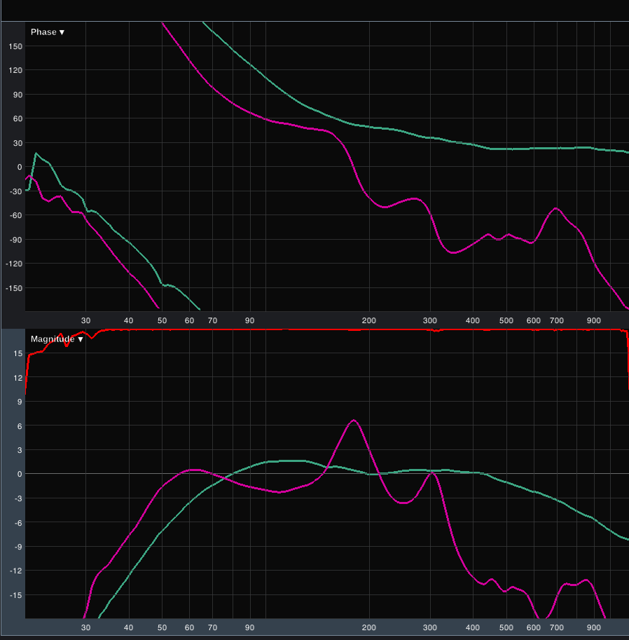
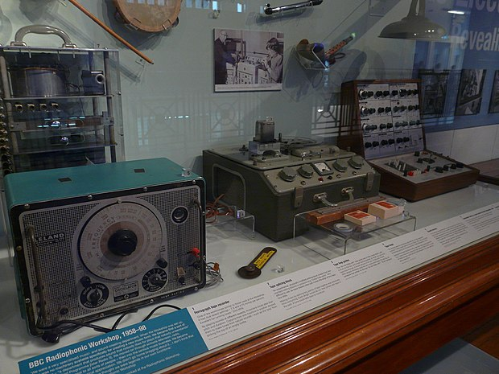
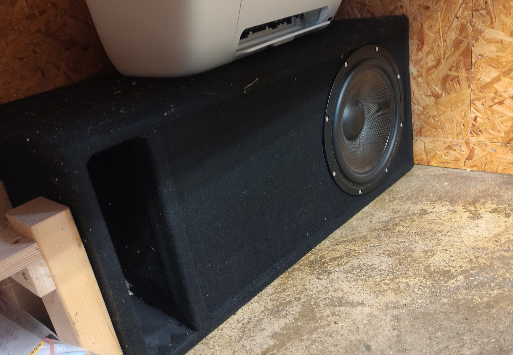

On the bench is a home-brew transmission line built from a cheap 4-inch driver and some folded plywood. The point is not the box; it is the FIR crossover that goes with it.
Part 3
As I mentioned in the previous post, I was getting annoyed by the overall group delay introduced by the textbook IIR (LR 24 dB/oct) filtering. So here's the experiment: a home-brew TL with a very cheap 4-inch speaker. I totally forgot to take pictures of the making; not that interesting anyway. It is a standard quarter-wave back-loaded TL with some folding, very similar to the PMC design.
The big difference is the filtering. I used one of my DSP boards to make an overall zero-phase-shift crossover using FIR filtering. How to do so will be a topic for a different series of posts. Soon. Maybe.
While presenting them to my audio peers, it became clear that there is no way back to IIR filtering once you have tasted the reverberant field as presented by a zero-phase system. But that wasn't the topic of this experiment; we were investigating the sonic properties of a transmission line. Funny coincidence: right at this moment the Amsterdam Dance Event is happening, and all newspapers are full of interviews with the current stars of EDM. The accompanying illustrations show studios with big PMC transmission-line monitors.

So this is hot stuff at the moment. Now, how does a TL sonically compare to a different approach?

It is the very same speaker, with a different horn-loaded tweeter, but we can ignore that. Literally. We have been practising listening for some time. In this small cabinet I used a digital implementation of the Linkwitz Transform to squeeze some LF response out of that wee speaker. In the STM32 part of this blog I talked a bit about the intricacies of this.
So we now have two things to compare after each other. As always when listening to and evaluating audio, you have to remember it for a few seconds, which isn't simple and definitely needs some training. How do they compare?


The purple line is close to the port of the TL (transmission line), while the green line is close to the speaker of the LT (Linkwitz transform) closed box. Clearly the TL has quite some lower response around 60 Hz (again, such a nice frequency), although at the cost of a bit of a funky phase response. Forget the resonances at 180 and 300 Hz (hey, odd harmonics, hmmm); they certainly spoil the fun in this experiment and are the main reason that some music really shines while other sounds horrific. Missing-fundamental psychoacoustics at play here.
But we are not finished yet.


I totally like that 60 Hz from such a small box. So I made another, slightly bigger TL with a 10-inch speaker. Right at this moment it is playing at my feet under my desk. Even at actual quiet levels it really does bring an extra dimension to the genre I am currently digging: Hauntology. (EDM is too boring for me.) So you can get an idea of the sonic landscape.


Now, what about those pipe harmonics in this setup? Well, very steep FIR filtering at 80 Hz proved to solve that. How? By using downsampling to a sample frequency that doesn't take zillions of coefficients to get the desired resolution of the linear-phase filter. Naturally, a lot of delay has to be added to the high-end desktop speakers.
And now things get really interesting. I was never a fan of "separate" subwoofers, also in live sound. Setting delays from subs to mains, or vice versa, always gives you grief when they are some distance apart, especially if you understand what phase alignment involves. Why would that be, as wavelengths around those frequencies are in metres? So how could a few centimetres make a difference? Well, maybe the much higher-in-frequency harmonic distortion produced by subs has to be in time with your main?
With the above very steep filtering I could, at least at lower levels, get rid of that distortion, and now the sub behaves as it should: it seems as if my wee desktop speakers are producing a tremendous amount of accurate bass, most certainly with instruments I know well (like bass guitar).
I also tried a similar setup with a conventional cabinet, but that doesn't give the same results: a TL has a lot more efficiency at the frequency of interest, meaning the cone has to move less and thus produces less distortion compared with an augmented closed box.
So that leaves only the quirky phase response (at 60–70 Hz) from a TL to be evaluated against program material. I could differentiate it to get the group delay and a better insight. Let's see...
...Audio reproduction is a construct.